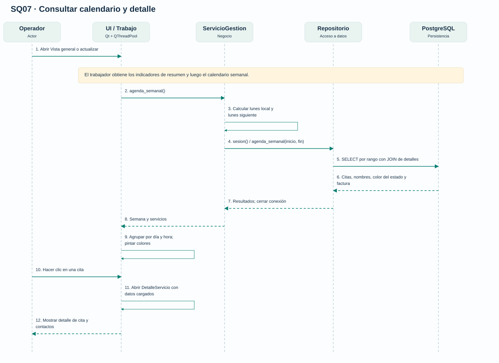
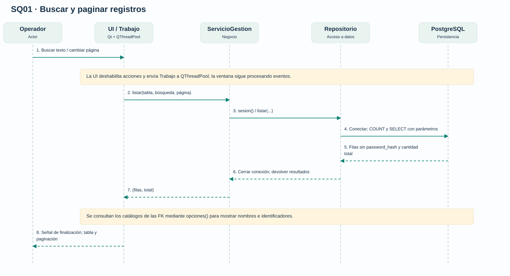
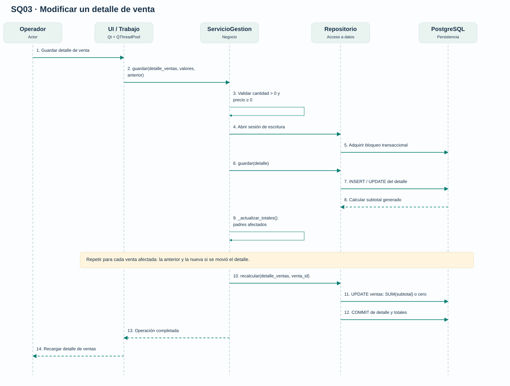
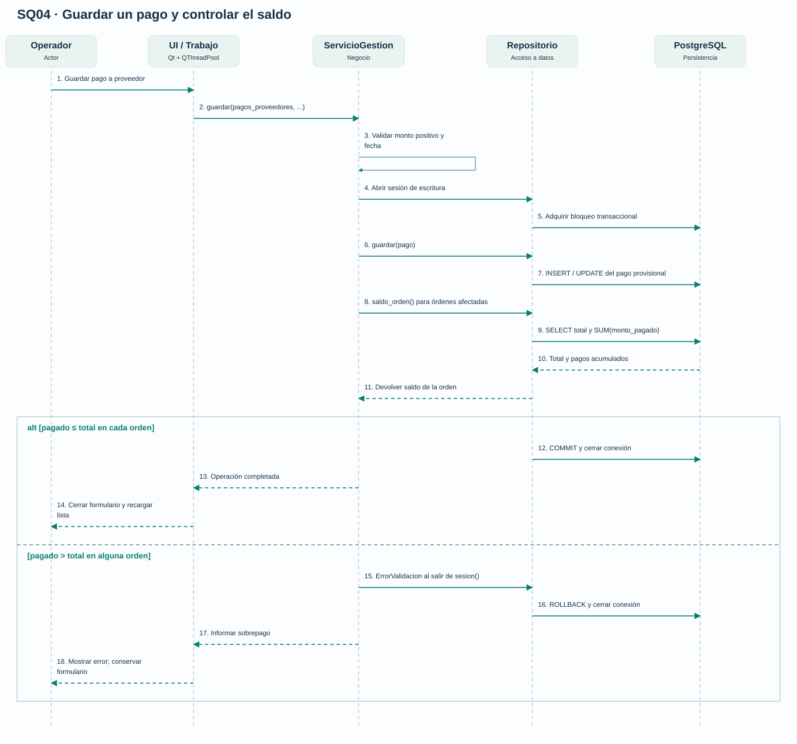
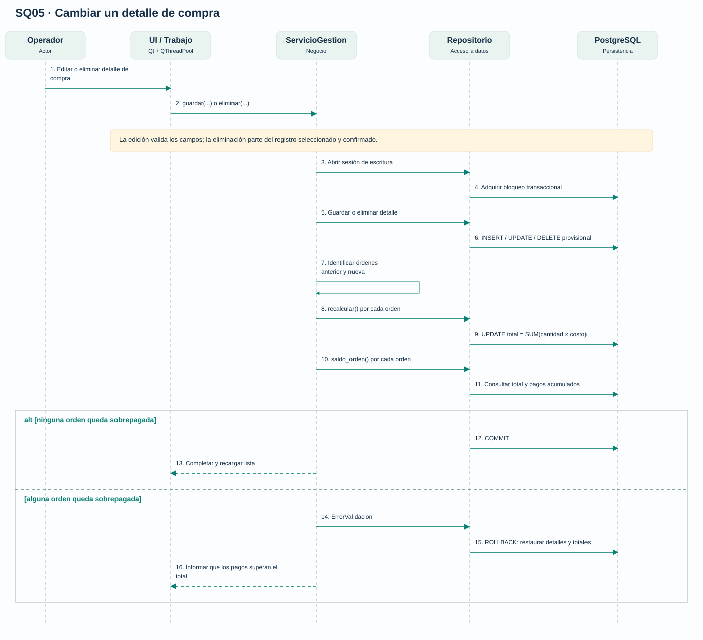
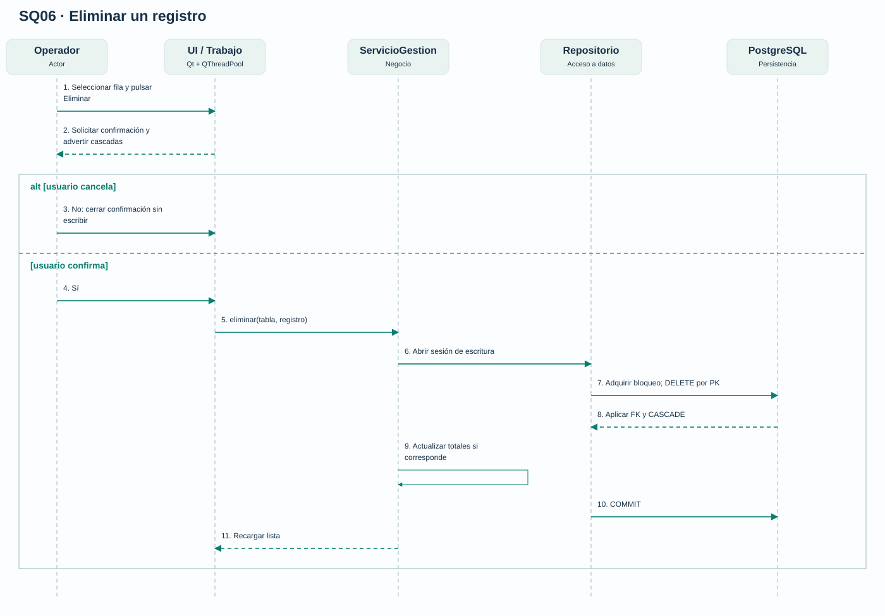

7 recorridos que conectan las acciones del operador con validaciones, consultas y transacciones PostgreSQL.
Lectura y responsabilidades
El tiempo avanza hacia abajo. Las flechas continuas indican llamadas o mensajes; las discontinuas representan respuestas. Los marcos alt son alternativas excluyentes con su condición entre corchetes. Las notas amarillas explican trabajo repetido o responsabilidades resumidas.
El participante UI / Trabajo reúne el hilo principal de Qt y la tarea del pool para mantener legibles las tres capas. Las llamadas al servicio se ejecutan en el trabajador; la señal de finalización actualiza los widgets en la UI. La conexión se abre y cierra dentro de la sesión del repositorio.
Los diagramas son vistas lógicas del código actual. El COMMIT ocurre al salir normalmente del contexto de conexión; una excepción provoca ROLLBACK. No hay una llamada pública independiente a commit() desde la UI.
SQ07 · Consultar calendario y detalle
Trazabilidad: CU01 / CU05 · ServicioGestion y Repositorio.

Vista lógica por capas. Los números ordenan los mensajes del dibujo; solo se ejecuta una rama de cada alt.
Rango: lunes 00:00 inclusivo a lunes siguiente 00:00 exclusivo, según hora local. Se incluyen todas las citas de la semana y se identifican las pasadas. Los colores se leen del estado actual al recargar; la ventana de detalle utiliza los datos ya consultados.
SQ01 · Buscar y paginar registros
Trazabilidad: CU02–CU12 · ServicioGestion y Repositorio.

Vista lógica por capas. Los números ordenan los mensajes del dibujo; solo se ejecuta una rama de cada alt.
Si PostgreSQL rechaza la escritura, la sesión hace rollback y traduce el error a ErrorDatos; se conserva el formulario. En empleados, antes de guardar se consulta la asociación del rol laboral y se deriva el departamento; el valor enviado por la UI no decide esa asignación. En usuarios, validar() genera el hash antes de abrir la sesión. Para detalles y pagos se agregan las reglas de SQ03 y SQ04.
SQ03 · Modificar un detalle de venta
Trazabilidad: CU10 · ServicioGestion y Repositorio.

Vista lógica por capas. Los números ordenan los mensajes del dibujo; solo se ejecuta una rama de cada alt.
Al eliminar un detalle se ejecuta DELETE y después el mismo recálculo. Cabecera y detalles se crean en operaciones separadas. No se aplican descuentos ni se descuentan existencias.
SQ04 · Guardar un pago y controlar el saldo
Trazabilidad: CU12 · ServicioGestion y Repositorio.

Vista lógica por capas. Los números ordenan los mensajes del dibujo; solo se ejecuta una rama de cada alt.
El pago se escribe provisionalmente y se valida dentro de la misma transacción. Un pago inválido no queda persistido. Si cambia de orden, se revisan ambas. El bloqueo coordina las escrituras de esta aplicación, no clientes SQL externos.
SQ05 · Cambiar un detalle de compra
Trazabilidad: CU11 · ServicioGestion y Repositorio.

Vista lógica por capas. Los números ordenan los mensajes del dibujo; solo se ejecuta una rama de cada alt.
La validación evita reducir una orden por debajo de lo ya pagado. Un error en cualquiera de las órdenes revierte toda la operación. Registrar una compra no aumenta automáticamente el stock.
SQ06 · Eliminar un registro
Trazabilidad: CU02–CU12 · ServicioGestion y Repositorio.

Vista lógica por capas. Los números ordenan los mensajes del dibujo; solo se ejecuta una rama de cada alt.
Una FK incompatible, un registro inexistente o una regla de saldo impiden completar la operación: se revierte y se informa el error. Las cascadas están definidas en db.sql, no se inventan en la UI.
Fuentes de implementación
ventana.py: ejecutar, cargar_tabla, formulario y eliminar.
servicios.py: validar, guardar, eliminar y _actualizar_totales.
repositorio.py: sesion, listar, guardar, eliminar, recalcular y saldo_orden.
{kind=link}
{kind=link}
{kind=link}
{kind=link}
{kind=link}
{kind=link}
{kind=link}